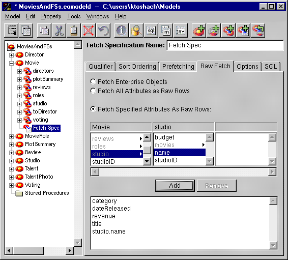

Table of Contents
Table of Contents  Next Section
Table of Contents
Next Section
Table of Contents  Previous Section
Previous Section
Enterprise Objects Framework 3.0 supports this concept of a simplified fetch, called raw row fetching. In raw row fetching, each row from the database is fetched into an NSDictionary object.
When you use raw row fetching, you lose some important features:

Figure 46. Specifying a Raw Row Fetch
Table of Contents Next Section